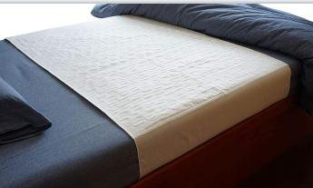
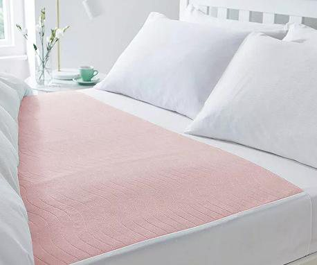
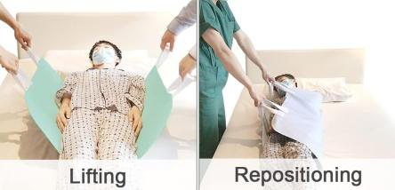
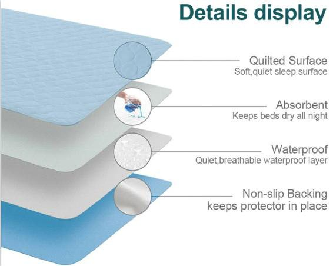
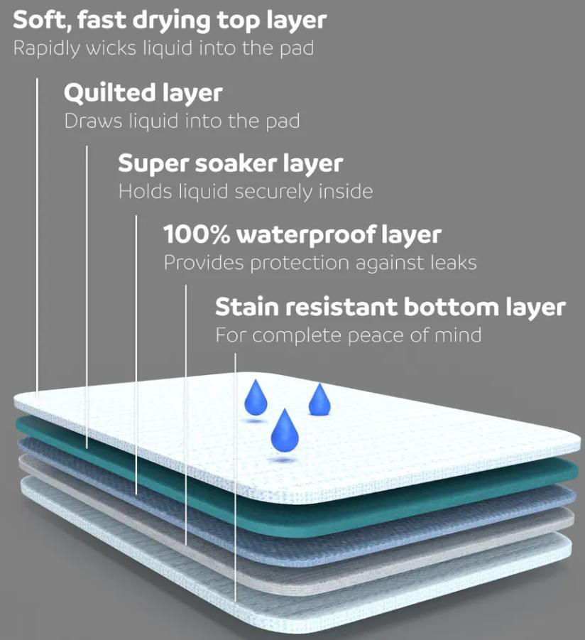
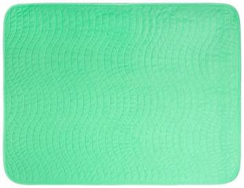

Tout ce que nous fournissons, sur une seule page
Huit modèles d’alèses avec spécifications complètes des couches, puis couleurs, imprimés, matelassage, poignées, rabats, tailles et bavoirs adultes.
 14
14Huit modèles d’alèses que nous fournissons
Chaque modèle peut être fabriqué dans toutes les tailles et couleurs, avec votre étiquette et votre emballage.
14 58
58 59
59 60
60 61
61Modèle standard
Notre modèle de tous les jours. Un dessus et un envers en polyester brossé doux enveloppent une âme absorbante aiguilletée et une barrière TPU. Facile à personnaliser en couleur et en taille.
| Dessus | Polyester brossé doux 90 g/m² (ou coton) |
|---|---|
| Cœur absorbant | 95 % polyester / 5 % viscose ou 65 % / 35 % ; 200 / 230 / 270 / 340 g/m² ; ≈ 200 / 300 / 400 ml par alèse 34 × 36 in (Léger / Standard / Fort) |
| Barrière imperméable | Film TPU 0,025 mm, 30 g/m² ; plus de 300 lavages en machine |
| Envers | Polyester brossé doux 90 g/m², antidérapant |
Tailles : 18 × 24 in à 72 × 72 in, 40 × 60 cm à 90 × 160 cm ou toute taille · Couleurs : 8 couleurs standard, imprimés ou Pantone
Modèle standard : page complète 15
15 65
65 66
66 67
67Dessus coton · envers PVC
Pour ceux qui préfèrent le toucher du coton. Un dessus coton en quatre grammages repose sur une couche de rembourrage douce et une âme absorbante, avec un envers PVC imperméable protégé par une maille antidérapante.
| Dessus | Coton doux pour la peau, 100 / 120 / 140 / 180 g/m² |
|---|---|
| Rembourrage | Couche de rembourrage en polyester |
| Cœur absorbant | 95 % polyester / 5 % viscose ou 65 % / 35 % ; 200 / 230 / 270 / 340 g/m² ; ≈ 200 / 300 / 400 ml par alèse 34 × 36 in (Léger / Standard / Fort) |
| Envers imperméable | PVC avec maille antidérapante ; plus de 300 lavages en machine |
Tailles : 18 × 24 in à 72 × 72 in, 40 × 60 cm à 90 × 160 cm ou toute taille · Couleurs : 8 couleurs standard, imprimés ou Pantone
Dessus coton · envers PVC : page complète 16
16 68
68Tissu bambou
Une construction en cinq couches. Le dessus bambou est frais et lisse, une couche de ouate apporte de la douceur, et l’âme absorbante, la barrière TPU et l’envers antidérapant assurent la protection.
| Dessus | Tissu bambou, frais et lisse au toucher |
|---|---|
| Ouate | Couche de ouate en polyester |
| Cœur absorbant | 95 % polyester / 5 % viscose ou 65 % / 35 % ; 200 / 230 / 270 / 340 g/m² ; ≈ 200 / 300 / 400 ml par alèse 34 × 36 in (Léger / Standard / Fort) |
| Barrière imperméable | Film TPU 0,025 mm, 30 g/m² ; plus de 300 lavages en machine |
| Envers | Polyester brossé doux, antidérapant |
Tailles : 18 × 24 in à 72 × 72 in, 40 × 60 cm à 90 × 160 cm ou toute taille · Couleurs : 8 couleurs standard, imprimés ou Pantone
Tissu bambou : page complète 17
17 70
70 71
71Éponge
Les boucles d’éponge éloignent le liquide de la peau vers l’âme. Sous le dessus éponge : une couche de ouate, l’âme absorbante, la barrière TPU et un envers antidérapant anti-taches.
| Dessus | Éponge (bouclette) |
|---|---|
| Ouate | Couche de ouate en polyester |
| Cœur absorbant | 95 % polyester / 5 % viscose ou 65 % / 35 % ; 200 / 230 / 270 / 340 g/m² ; ≈ 200 / 300 / 400 ml par alèse 34 × 36 in (Léger / Standard / Fort) |
| Barrière imperméable | Film TPU 0,025 mm, 30 g/m² ; plus de 300 lavages en machine |
| Envers | Polyester brossé doux, antidérapant |
Tailles : 18 × 24 in à 72 × 72 in, 40 × 60 cm à 90 × 160 cm ou toute taille · Couleurs : 8 couleurs standard, imprimés ou Pantone
Éponge : page complète 18
18
72
73 74
74 75
75Modèle à rabats
Pour les dormeurs agités et les personnes alitées. Le panneau central matelassé absorbe ; les longs rabats latéraux se glissent sous le matelas pour que l’alèse ne glisse ni ne se froisse.
| Dessus | Polyester brossé doux 90 g/m² (ou coton) |
|---|---|
| Cœur absorbant | 95 % polyester / 5 % viscose ou 65 % / 35 % ; 200 / 230 / 270 / 340 g/m² ; ≈ 200 / 300 / 400 ml par alèse 34 × 36 in (Léger / Standard / Fort) |
| Barrière imperméable | Film TPU 0,025 mm, 30 g/m² ; plus de 300 lavages en machine |
| Envers | Polyester brossé doux 90 g/m², antidérapant |
Tailles : 18 × 24 in à 72 × 72 in, 40 × 60 cm à 90 × 160 cm ou toute taille · Couleurs : 8 couleurs standard, imprimés ou Pantone
Modèle à rabats : page complète
19 77
77 78
78 79
79 80
80Modèle à poignées
Une alèse de soin qui sert aussi d’aide au positionnement. Les poignées renforcées permettent à deux soignants de soulever, repositionner et tourner une personne ; l’alèse reste ensuite à plat comme une protection de lit normale.
| Dessus | Polyester brossé doux 90 g/m² (ou coton) |
|---|---|
| Cœur absorbant | 95 % polyester / 5 % viscose ou 65 % / 35 % ; 200 / 230 / 270 / 340 g/m² ; ≈ 200 / 300 / 400 ml par alèse 34 × 36 in (Léger / Standard / Fort) |
| Barrière imperméable | Film TPU 0,025 mm, 30 g/m² ; plus de 300 lavages en machine |
| Envers | Polyester brossé doux 90 g/m², antidérapant |
Tailles : 18 × 24 in à 72 × 72 in, 40 × 60 cm à 90 × 160 cm ou toute taille · Couleurs : 8 couleurs standard, imprimés ou Pantone
Modèle à poignées : page complète 20
20 81
81 82
82 83
83 84
84Envers PVC
L’option économique pour les gros volumes. Un dessus en polyester brossé ou coton et une âme absorbante reposent sur une barrière PVC entièrement imperméable, avec un envers en maille antidérapant et anti-boulochage.
| Dessus | Polyester brossé doux ou coton |
|---|---|
| Cœur absorbant | 95 % polyester / 5 % viscose ou 65 % / 35 % ; 200 / 230 / 270 / 340 g/m² ; ≈ 200 / 300 / 400 ml par alèse 34 × 36 in (Léger / Standard / Fort) |
| Barrière imperméable | PVC ; plus de 300 lavages en machine |
| Envers | Maille antidérapante et anti-boulochage |
Tailles : 18 × 24 in à 72 × 72 in, 40 × 60 cm à 90 × 160 cm ou toute taille · Couleurs : 8 couleurs standard, imprimés ou Pantone
Envers PVC : page complète 21
21 85
85 8661
8661Swift Dry
Pour les programmes de blanchisserie à forte rotation. Un dessus bouclette sur une âme épaisse de 340 g/m² (≈ 400 ml par alèse 34 × 36 in). Les temps de traversée et de séchage sont mesurés pour votre commande et indiqués dans le rapport d’essai.
| Dessus | Bouclette 150 g/m² |
|---|---|
| Cœur absorbant | 65 % polyester / 35 % viscose, 340 g/m² ; ≈ 400 ml par alèse 34 × 36 in |
| Barrière imperméable | Film TPU 0,025 mm, 30 g/m² ; plus de 300 lavages en machine |
| Envers | Polyester brossé doux 90 g/m², antidérapant |
Tailles : 18 × 24 in à 72 × 72 in, 40 × 60 cm à 90 × 160 cm ou toute taille · Couleurs : 8 couleurs standard, imprimés ou Pantone
Swift Dry : page complèteQuatre couches, chacune avec un rôle
Tous les modèles reposent sur le même système de couches. Choisissez la matière de chaque couche.

76 5784
5784 64
64
69Couche par couche
| 1 · Dessus matelassé | Polyester brossé 90 g/m² · coton 100–180 g/m² · bambou · éponge · bouclette 150 g/m² |
|---|---|
| 2 · Âme absorbante | Polyester / viscose aiguilleté (95/5 ou 65/35) · 200 / 230 / 270 / 340 g/m² |
| Capacité | ≈ 200 / 300 / 400 ml par alèse 34 × 36 in (Léger / Standard / Fort) ; méthode d’essai sur la page Absorption |
| 3 · Barrière imperméable | Film TPU 0,025 mm, 30 g/m², respirant et silencieux · ou PVC |
| 4 · Envers | Polyester brossé 90 g/m², antidérapant · ou maille anti-boulochage |
| En option | Couche de ouate supplémentaire (5 couches), deuxième âme pour usage intensif |
| Bordure | Biais à double piqûre, coins arrondis |
| Durabilité | Plus de 300 lavages en machine ; version établissement 95 °C disponible |
Couleurs, imprimés, matelassage, poignées et rabats
Couleurs du dessus et de l’envers au choix.
 26
26 27
27
28 29
29 30
30 31
31 32
32 33
338 couleurs standard
Blanc, menthe clair, vert, bleu clair, pêche, marron, marine et gris, en tissu de stock. Les versions bicolores (par exemple dessus blanc, envers bleu) sont standard.
| Couleurs en stock | À partir de 500 pièces par taille |
|---|---|
| Couleur personnalisée | Toute couleur Pantone TCX, à partir de 1 000 pièces par SKU |
| Bicolore | Dessus et envers de couleurs différentes |
 88
88 89
89 90
90 91
91 92
92 93
93 94
94 102
102Motifs imprimés
Les écossais et tons foncés cachent les taches pour adultes et animaux ; les imprimés ludiques conviennent aux enfants et aux chambres de bébé. Votre propre motif peut être imprimé sur le dessus.
 87
8712 motifs de matelassage
Vague, losange, canaux, oignon, écailles et plus, ou un matelassage logo personnalisé. Le matelassage maintient l’âme en place au fil de centaines de lavages et répartit le liquide sur une plus grande surface.
7978 968077
968077Poignées pour soulever et tourner
Les poignées renforcées font de l’alèse une aide au positionnement : deux soignants peuvent soulever, repositionner et tourner une personne, puis l’alèse reste à plat comme une protection de lit normale.
| Poignées | 4, 6 ou 8 par alèse |
|---|---|
| Taille courante | 34 × 52 in (86 × 132 cm) avec 8 poignées ; 34 × 36 in avec 4 |
| Disponible sur | À poignées VC-PH01, dessus coton VC-PC01, envers PVC VC-PVC01 |
| Usage | Hôpitaux, maisons de retraite, lits de soins à domicile |
1867Rabats à border
De longs rabats latéraux se glissent sous le matelas pour que l’alèse ne glisse ni ne se froisse : la fonction la plus demandée pour les dormeurs agités et les personnes alitées.
| Rabats | 2 rabats, 46 × 86 cm (18 × 34 in) |
|---|---|
| Taille courante | Panneau central 34 × 36 in ou 34 × 52 in |
| Disponible sur | À rabats VC-PF01, bambou VC-PB01, dessus coton VC-PC01 |
19 tailles standard, ou toute taille
Pouces pour l’Amérique du Nord, centimètres pour l’Europe et le Japon. Tolérance ±2 cm.
66Formats standard
Pouces : 18 × 24 · 24 × 36 · 30 × 36 · 34 × 36 · 34 × 52 · 34 × 60 · 36 × 60 · 34 × 76 · 36 × 72 · 72 × 72
Centimètres : 40 × 60 · 60 × 90 · 70 × 90 · 75 × 90 · 75 × 100 · 90 × 160
Toute autre taille sur commande.
Conditionnements de 1, 2, 3 ou 4 alèses, ou en vrac pour les établissements.
Tableau complet des tailles, usages et conditionnements| Format | Dimensions à plat | Usage type | Lots de vente |
|---|---|---|---|
| Assise / nourrisson | 18 × 24 in | Tapis à langer, chaise haute, siège auto, fauteuil roulant, caisse pour animal (structure 4 couches) | 3 |
| Fauteuil roulant / canapé | 24 × 36 in | Fauteuil, assise de canapé, fauteuil roulant, lit à barreaux | 2 / 4 |
| Siège / lit simple | 30 × 36 in | Lit simple sous les hanches, assise de canapé | 2 / 4 |
| Lit médicalisé / lit simple | 34 × 36 in | Taille la plus vendue ; lit (sous les hanches) | 2 / 4 |
| Lit – long | 34 × 52 in | Couvre des épaules aux genoux | 1 / 2 |
| Lit – très long | 34 × 60 in | Dormeurs agités, toute la largeur du matelas (lit simple) | 2 |
| Lit – large | 36 × 60 in | Lits doubles / queen, couples, grands chiens | 2 |
| Lit – pleine longueur | 34 × 76 in | De la tête aux pieds sur un matelas simple / médicalisé ; personnes alitées | 1 |
| Lit — pleine longueur, large | 36 × 72 in | Couverture de la tête aux pieds, lits simples et médicalisés | 1 |
| Lit — pleine largeur | 72 × 72 in | Lit double / queen, pleine largeur | 1 |
| Rabats – standard | 34 × 36 in + 2 rabats 18 × 34 in | Les rabats se bordent sous le matelas : l'alèse reste en place | 2 |
| Rabats – long | 34 × 52 in + 2 rabats 18 × 34 in | Couverture plus longue avec rabats ; démence et dormeurs agités | 2 |
| Métrique — petit | 15.7 × 23.6 in | Matelas à langer, caisse pour animal, siège auto | 3 |
| Métrique — moyen | 23.6 × 35.4 in | Lit bébé, chaise, assise de canapé | 2 |
| Métrique — lit | 27.6 × 35.4 in | Lit simple sous les hanches | 2 |
| Format UE | 29.5 × 35.4 in | Taille standard des aides techniques en Allemagne / UE | 1 / 2 |
| Métrique — long | 29.5 × 39.4 in | Lit médicalisé, couverture plus longue | 1 / 2 |
| Demi-alèse JP | 35.4 × 23.6 in | Demi-format japonais 介護 防水シーツ | 1 / 2 |
| Métrique — pleine longueur | 35.4 × 63 in | Lit médicalisé, presque de la tête aux pieds | 1 |
| Sur mesure | Toute taille | Sur commande | Sur mesure |
Bavoirs imperméables pour adultes
 100
100Cinq modèles, VC-BIB01 à VC-BIB05
| VC-BIB01 | Écossais, trois coloris |
|---|---|
| VC-BIB02 | Écossais bleu et blanc |
| VC-BIB03 | Carreaux marine |
| VC-BIB04 | Carreaux bleu clair |
| VC-BIB05 | Éponge bleue |
Lavables en machine, avec un look digne et adulte. Tissus, imprimés et fermetures personnalisés en marque propre. Souvent commandés avec les alèses par les maisons de retraite et les revendeurs de soins à domicile.
Pages techniques
Prêt à lancer votre gamme d'alèses lavables ?
Indiquez-nous votre marché, vos tailles et vos quantités. Nous répondons sous un jour ouvré avec fiche technique et grille de prix.